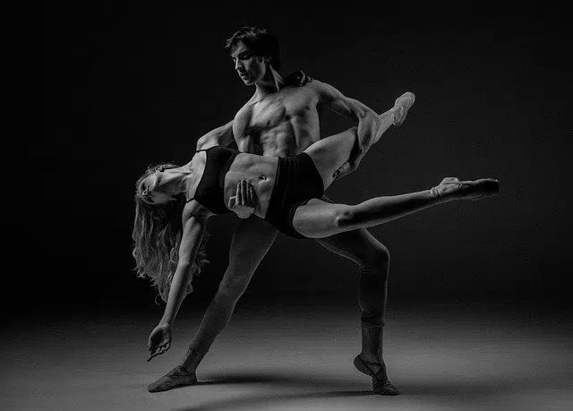

A dança é conhecida mundialmente por conectar pessoas e transmitir mensagens e histórias.
A dança está presente desde o início, começa com a própria vida e passa a fazer parte de muitas culturas e evolui com o tempo. também com ele ele traz tipos de danças
Como a dança é internacional, existem tipos e variedades, cada uma com características que a diferenciam, como: a (origem dos tamancos irlandeses, Inglaterra e Escócia) dois passos (originalmente da Espanha) Charleston (originalmente dos EUA) rumba (originalmente de Cuba) cumbia (originalmente da Colômbia) Joropo (originalmente da Venezuela) Merengue (originário do norte da República Dominicana) Popping (originalmente dos EUA, Califórnia) também inclui breakdance, batuka e electro dance.
e muitos tipos de danças que não necessitam de uma linguagem específica, transmitem uma mensagem através do movimento e da musica.
I will display 😀
I will display A B C